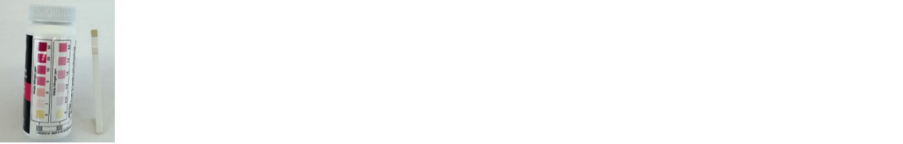
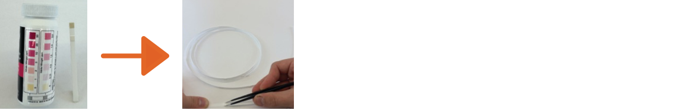
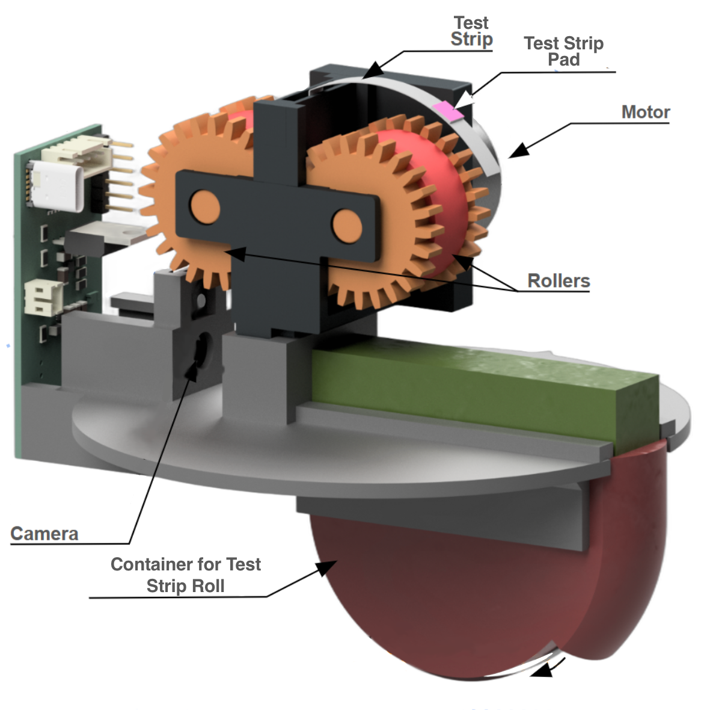
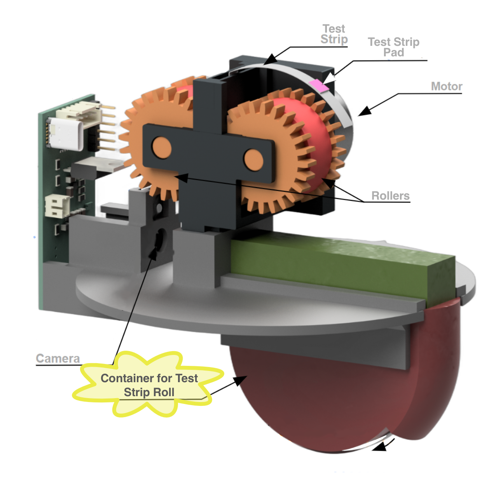
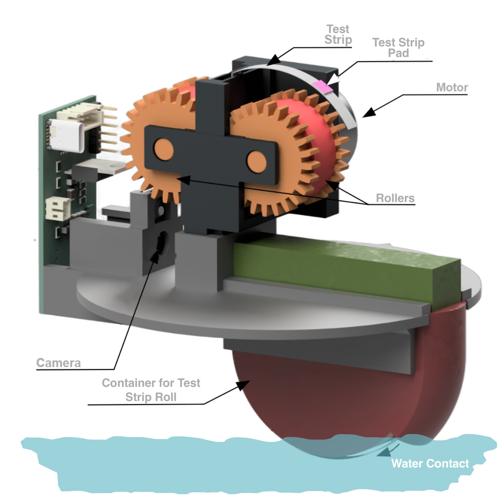
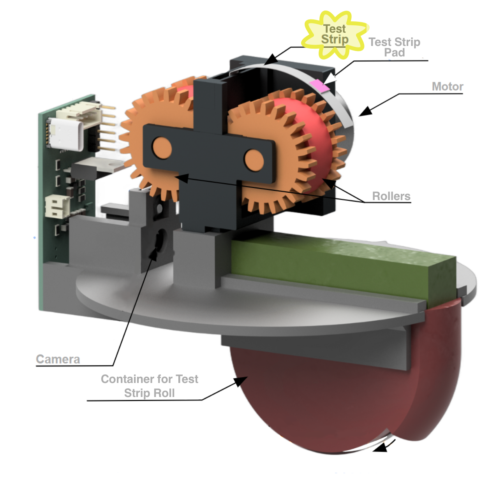
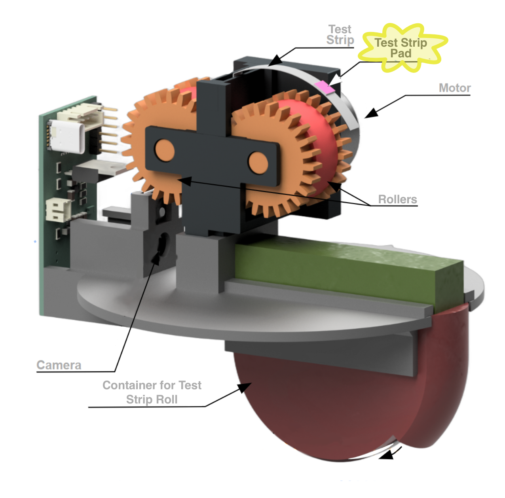
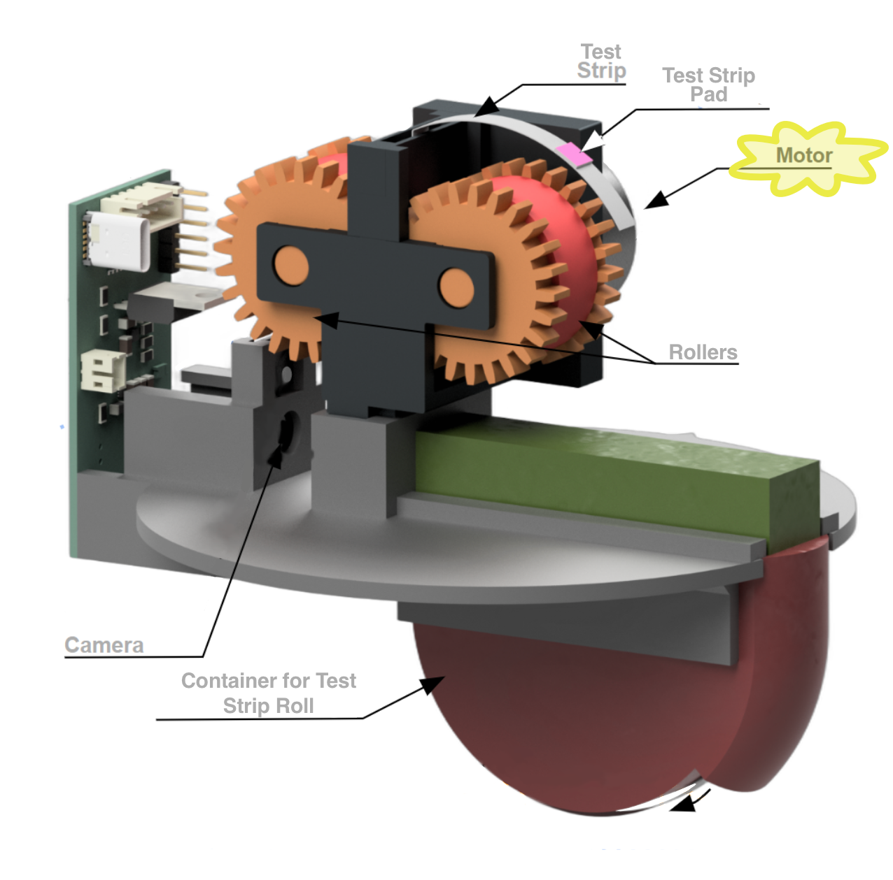
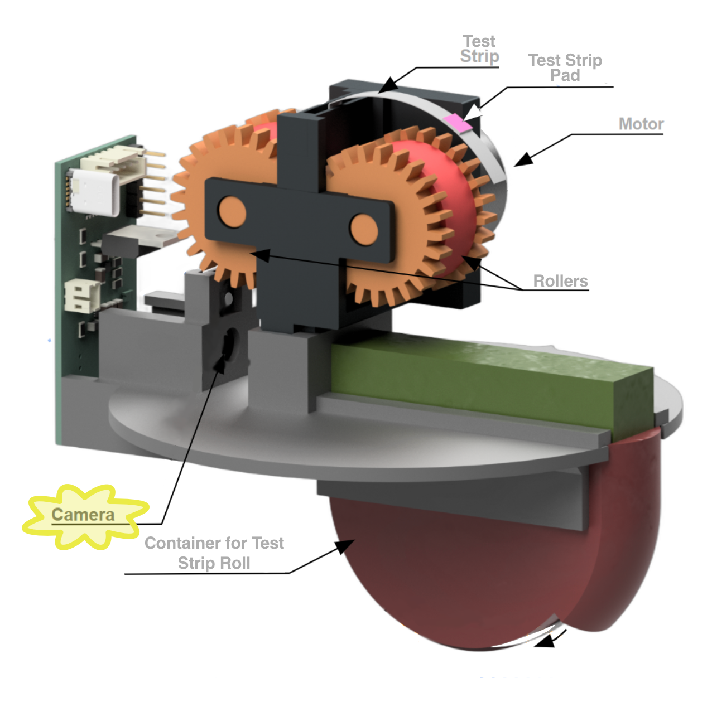

Workshop #2
Classification & Color
Lesson Objective
In this lesson, you will learn about and apply ideas around image classification, neural nets, color, as well as how they can be used to monitor water quality.
Materials Needed:
- 💻 A computer with a webcam
- A web browser (Chrome, Firefox, or Safari)
Workshop Structure
Review
Last workshop we learned:
- Forms of Nitrogen in Water
- Nitrate
- Nitrite
- Nitrate
- EPA Limits?
Review
Last workshop we learned:
- Roles of Nitrogen in Water:
- Nutrient
- Pollutant
- 🐄 Waste runoff
- 🌧️ Acid rain
- 🌼 Fertilizer
- 🐄 Waste runoff
- Nutrient
Review
Last workshop we learned:
- Using Python to store, summarize, and visualize data
- Store data in a list
- Useful functions:
len()
min()
max()
- Store data in a list
Review
Last workshop we learned:
- Using Statistics to Summarize Data
- Measures of Center
- Mean
- Median
- Measures of Spread
- Range
- Measures of Center
Meet the Buoy!
Meet the Buoy!
Later this semester, we will be deploying these Smokey Buoys!

🎥 Buoy In Action!
The Buoy: Test Strips
- Smokey Buoy also uses test strips to monitor nitrate concentrations in water
- Like we did in the first workshop!
- The buoy’s strips are just made a bit differently…
The Buoy: Test Strips

Start with the same test strips
The Buoy: Test Strips

Remove the pads and adhere onto a long strip of material
The Buoy: Test Strips

Roll up strip inside canister
The Buoy: Test Strips

Strip dispenses out of the canister to be fed through the roller
The Buoy: Other Parts!

The Buoy: Container for Test Strip Roll

Container for Test Strip Roll
The canister stores the rolled-up test strip and feeds it out as the motor and rollers advances it.
The Buoy: Water Contact

Water Contact
There is an opening in a chamber of the canister, allowing the strip to contact the water.
The Buoy: Test Strip

Test Strip
The test strip feeds up from the canister and through the rollers.
The Buoy: Test Strip Pad

Test Strip Pad
The reactive pad on the strip changes color when exposed to nitrates in water.
The Buoy: Rollers

Rollers
The rollers grip the test strip and advance it one pad at a time.
The Buoy: Motor

Motor
The motor drives the rollers, which grip and advance the test strip.
The Buoy: Camera

Camera
When a test pad is positioned in front of the camera, it takes a picture to record the color.
🗣️ Discuss: In Your Group
Thinking back to the nitrates activity from last week…
- What are the benefits to using a computerized buoy to conduct water quality tests?
- What are the drawbacks?
Intro to Classification
Intro to Classification
🎯 Checkpoint 2. a: Which banana(s) would you eat?

Source: US Department of Agriculture
Intro to Classification
- People make decisions about ripeness daily: grocery shoppers & farmers alike.
- These decisions—judging if a fruit/vegetable is ripe—are called classification.
- Classification = sorting items into groups based on appearance or behavior.
Use of Classification in Agriculture
- AI can help make classification decisions, saving time and labor for farmers
- Example: At University of Maryland, AI is used to identify ripe crops in fields
Use of Classification in Agriculture
🎯 Checkpoint 2. b: Review the figure below. In image (b), what do you think the yellow represents? The green?
Binary Classification
Two possible Outcomes:
| Not Ripe | Ripe |
Types of Classification
Classification of Strawberries
- Binary Classification: Two possible outcomes (e.g., Ripe vs. Not Ripe)
- Multiclass Classification: More than two possible outcomes (e.g., Underripe, Ripe, Overripe)
Multiclass Classification
More than Two Outcomes:
| Underripe | Ripe | Molded |
Multiclass Classification Example 1
Pros of Using AI for Classification
- Using AI has advantages and disadvantages
Pros:
- Handles millions of items quickly
- Makes classification decisions quickly
- Spots tiny differences humans miss
Cons of Using AI for Classification
Cons:
- Needs tons of examples to train the computer
- Bad examples = bad decisions (e.g., train only on sunny photos, it fails on cloudy days).
🗣️ Discuss: In Your Group
🎯 Checkpoint 2. c:
If farmers use a certain company to train and decide when to pluck or harvest fruits/veggies, who gets to own that data?
Why?
🗣️ Discuss: In Your Group
🎯 Checkpoint 2. d:
Let’s say the company becomes better at identifying ripe fruits because they used data from your farm. Now, they want to up their subscription fees for farmers (including you) to use their model.
Is that fair?
Do you have any suggestions or solutions?
💻 Classification: Your Turn!
Classification Activity - Train
- Fruit Assortment
- 🍎 Apple, 🍊 Orange, 🍋🟩 Lime
- 💻 Device
- Lab sheet
💻 Teachable Machine

- Uses Python in the background
- Helps users build classification models
🚀 Let’s Go
💻 Go to Teachable Machine at:
*** We’ll walk through this together!
Evaluate Your Model!
Evaluate Your Classifier
- Some models can be very accurate, while others might struggle
- Let’s put your model to the test!
Evaluate Your Classifier
Use the “Preview” pane on the right side of the Teachable Machine screen

Putting it to the Test
Note
Get your lab sheet ready. Let’s record some results!
Steps for testing
- Trade your apple and orange with another group. No group should have the exact same fruits you trained the model with.
Steps for testing
- Take your lab sheet and review the observation table. The first item to test is an apple. If the model works well, what will it predict? Record this in the second column.
Steps for testing
- Next, hold the apple up to your camera. What does the model predict it is? Record this in the third column of your lab sheet.
Steps for testing
- The model also reports confidence in its prediction. Record this percent confidence in the fourth column of your sheet.
Steps for testing
- Repeat this process for all other objects on the lab sheet.
Reflecting
Discuss these Questions
- How did your model perform?
- Were any objects classified incorrectly?
- Were any objects classified with low confidence (< 80%)?
Classification Activity - Buoy
How a classification model works.
How Does It Work?
Checkpoints on this Page:
How Does Your Model Work?
- Under the hood of a classification model is a Convolutional Neural Net (CNN)
- CNNs are trained to recognize patterns in images
How Does Your Model Work?
Prioritize understanding big picture over math
How Does Your Model Work?
Checkpoint 5. a: Neural Network Layers
Compare and contrast the input layer, the hidden layers, and the output layer. What function do they each have in a neural net?
Color Activity
Checkpoints on this Page:
Understanding RGB
- Computers understand color through numbers, not like humans with eyes
- When a computer displays or processes an image, that image is really a combination of millions of little squares called pixels
Understanding RGB
- Each pixel has a value for Red (R), Green (G), and Blue (B)
- The color of each pixel is a combination of these three values
Pixels and RGB Values
🎯 Checkpoint 6. a: Exploring pixels and RGB Values
Materials Needed
Materials Needed:
- APPLET
- This will open in a new tab.
- You may need to grant access to your camera for it to work.
- Apple, Orange, Lime (from previous activity)
- Handout
- Pencil
Pixels and RGB Values
Use the applet and follow the instructions on the handout, which are also listed below.
Pixels and RGB Values
- The applet starts with “What Humans See” selected. Hold the apple up to the camera. Notice it captures its likeness?
Pixels and RGB Values
- Change the mode to “What Computers See”. It will default to the Red channel first.
Pixels and RGB Values
- Focus on an area at the center of the apple and record the value for R.
Pixels and RGB Values
- Use the dropdown menu to change the channel to G. Look at the same area (or as close to possible) on the apple, record the value for G.
Pixels and RGB Values
- Change the channel to B and record the value for B.
Pixels and RGB Values
- Repeat this process for the orange, lime, and each of the purple cards.
How Do Computers See Color?
Checkpoints on this Page:
How Do Computers See Color?
- We learned every pixel has a value for Red (R), Green (G), and Blue (B)
- Each value can range from 0 to 255
Creating Color with RGB Values
Slide the sliders to create different colors!
Slide the R, G, or B to see how it affects the color of the square!
Using RGB Values to Create Color
- Use the slider tool above to answer the RGB questions
- Record your answers on the handout
Using RGB Values to Create Color
- Slide all values to zero. When R = 0, G = 0, and B = 0, what color do you see?
- Slide all values to 255. When R = 255, G = 255, and B = 255, what color do you see?
Using RGB Values to Create Color
- Slide all values to 0. Change R to 255. What happens to the color?
- Slide all values to 0. Change G to 255. What happens to the color?
Using RGB Values to Create Color
- Slide all values to 0. Change B to 255. What happens to the color?
Using RGB Values to Create Color
- Now let’s try some of the colors you observed in the last activity. Get your handout ready!
Using RGB Values to Create Color
- Adjust the sliders to the RGB values you recorded for your apple. What color do you see? Is it similar to your apple?
Using RGB Values to Create Color
- Repeat this for your orange’s RGB values. What color do you see? Is it similar to your orange?
Using RGB Values to Create Color
- Finally, repeat this for your lime’s RGB values. What color do you see? Is it similar to your lime?
Using RGB Values to Create Color
🎯 Checkpoint 7. b: What color does this RGB value represent? (110, 164, 212) Just like the computer, predict what fruit this could be from!
Exit Ticket
AAIC — Water Quality